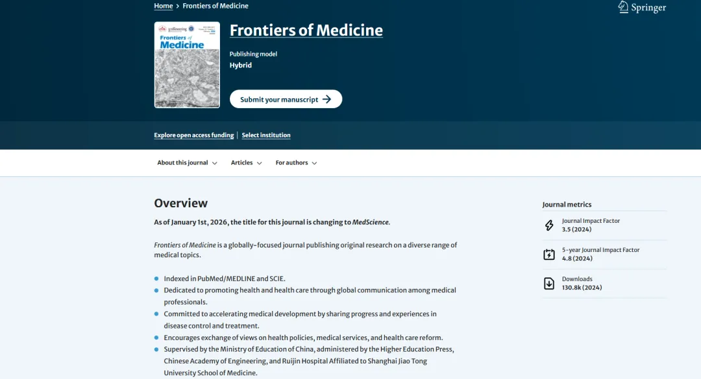

期刊更名，劣币驱逐良币？
原文：https://mp.weixin.qq.com/s?__biz=MzAwMzIzOTk5OQ==&mid=2247532453&idx=2&sn=474eb8eedd6545be77124a7c9a198816&chksm=9b3c06f5ac4b8fe3f57c39f55effab7643ef2ce5d71903c7c93d2adf423f879753b1d8515243#rd 合集：漫谈胡侃
最近发现一个事，《Frontiers of Medicine》宣布26年将更名为MedScience[1]。需要注意的是这个期刊并不属于那个系列，而是由中国教育部主管，高等教育出版社、中国工程院、上海交通大学医学院附属瑞金医院管理的一本期刊。可能是想划清界限吧，壮士断腕自己更名了。

[1]https://link.springer.com/journal/11684
注：以上段落均为化名，如有雷同纯属意外。

如何联系我们

 留一个领取资料、开箱即用的单细胞分析镜像的微信号[Biomamba_zhushou]，方便各位随时交流。同时我们也构建了交流群矩阵，欢迎大家入群讨论。
大家可以阅读完这几篇之后添加给生信入门初学者的小贴士
没有检索，就没有发言权
留一个领取资料、开箱即用的单细胞分析镜像的微信号[Biomamba_zhushou]，方便各位随时交流。同时我们也构建了交流群矩阵，欢迎大家入群讨论。
大家可以阅读完这几篇之后添加给生信入门初学者的小贴士
没有检索，就没有发言权
已有生信基地联系方式的同学无需重复添加

 您点的每个赞和在看，我都认真当成了喜欢
您点的每个赞和在看，我都认真当成了喜欢